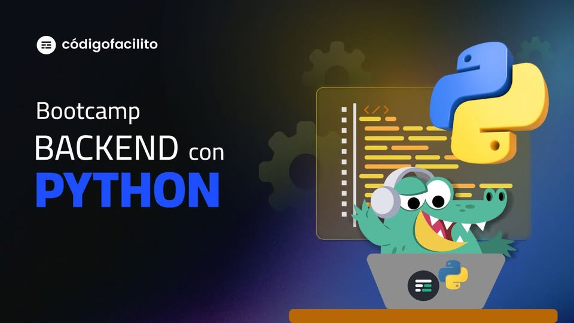
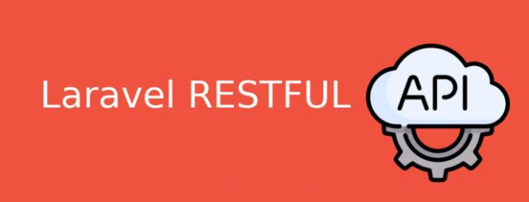

Bienvenido a ByteZone
un espacio creado para apasionados por la programación y la tecnología que quieren ir más allá del código
básico. Aquí exploramos el funcionamiento interno del desarrollo de software, las tendencias que están
transformando la industria tecnológica y las herramientas que están marcando el futuro digital.
En este blog encontrarás artículos sobre desarrollo web, backend, APIs, inteligencia artificial,
ciberseguridad y buenas prácticas de programación. Nuestro objetivo es explicar conceptos técnicos de
manera
clara, pero con profundidad, para que tanto estudiantes como desarrolladores en formación puedan
fortalecer
sus conocimientos y mantenerse actualizados en un mundo tecnológico que evoluciona constantemente.
ByteZone no es solo un blog, es un punto de encuentro para quienes quieren entender cómo funciona la
tecnología que mueve el mundo.
Articulos Relevantes
Articulo 1: Desarrollo de Backend con Python
Este artículo ofrece una guía clara y práctica sobre cómo desarrollar aplicaciones backend utilizando
Python. Explica los fundamentos del desarrollo del lado del servidor, el manejo de bases de datos y
la creación de APIs, mostrando cómo Python se ha convertido en una de las herramientas más
versátiles para el desarrollo web moderno. Es una lectura ideal para quienes desean comprender cómo
funciona la lógica detrás de las aplicaciones y cómo se conectan los sistemas para procesar
información de manera eficiente.
Además, el contenido profundiza en el uso de frameworks populares como Flask y Django, los cuales
permiten estructurar proyectos de manera organizada y escalable. También aborda conceptos clave como
rutas, peticiones HTTP, controladores y conexión con bases de datos relacionales, elementos
fundamentales para construir aplicaciones robustas y seguras.
En un entorno tecnológico donde las aplicaciones dependen cada vez más de servicios y arquitecturas
distribuidas, dominar el backend es esencial. Este artículo no solo introduce los conceptos básicos,
sino que también orienta al lector hacia buenas prácticas de desarrollo, preparación para entornos
reales y comprensión del papel del servidor dentro de una arquitectura web completa.

Si deseas profundizar en el desarrollo backend con Python,
puedes consultar el artículo completo en
DataCamp.
Articulo 2: Creación de APIs REST con Laravel
En este artículo se presenta un recorrido detallado sobre la construcción y prueba de una API RESTful
utilizando el framework Laravel. Se abordan conceptos clave como la arquitectura REST, la
autenticación, el manejo de rutas y las buenas prácticas en el desarrollo de servicios web. Es un
contenido técnico orientado a desarrolladores que desean fortalecer sus conocimientos en backend y
en la creación de aplicaciones escalables y seguras.
El artículo explica cómo estructurar un proyecto correctamente, definir controladores, modelos y
migraciones, así como gestionar solicitudes HTTP mediante métodos como GET, POST, PUT y DELETE.
También se profundiza en la implementación de autenticación basada en tokens y en la protección de
endpoints, aspectos fundamentales para garantizar la seguridad y el control de acceso en
aplicaciones modernas.
En un contexto donde las APIs permiten la comunicación entre diferentes sistemas, aplicaciones
móviles y plataformas web, dominar su diseño e implementación es una habilidad altamente valorada.
Este contenido no solo enseña a crear una API funcional, sino que también orienta al lector hacia
estándares profesionales y prácticas que facilitan el mantenimiento y la escalabilidad de los
proyectos.

Si deseas conocer el proceso completo para construir y probar una API REST utilizando Laravel,
puedes consultar el artículo completo en
Toptal Engineering Blog.
Articulo 3: Tendencias y Fundamentos en Programación
Este blog reúne diversos artículos enfocados en programación y tecnología, abordando temas como
desarrollo Full Stack, backend con Python y nuevas tendencias en el sector tecnológico. Cada
publicación ofrece una visión actualizada sobre herramientas, metodologías y oportunidades en el
mundo digital, convirtiéndose en un recurso valioso para estudiantes y profesionales que desean
mantenerse al día en un entorno tecnológico en constante evolución.
El contenido no solo explica conceptos técnicos, sino que también analiza cómo la industria del
software está cambiando con la aparición de nuevas tecnologías, frameworks y enfoques de desarrollo.
Se destacan aspectos como la importancia del aprendizaje continuo, la adaptabilidad frente a nuevas
herramientas y la necesidad de comprender tanto la lógica de programación como la arquitectura de
sistemas modernos.
En un mercado altamente competitivo, estar informado sobre tendencias tecnológicas y fundamentos
sólidos marca la diferencia entre un desarrollador promedio y uno preparado para enfrentar retos
reales. Este blog funciona como una fuente de actualización constante, ofreciendo orientación para
quienes buscan fortalecer sus bases técnicas y proyectarse profesionalmente dentro del sector
tecnológico.
Para explorar más contenidos sobre desarrollo Full Stack, backend y tendencias actuales en
programación,
puedes visitar la sección especializada en
The Power Business School.
Sobre Mí
Soy estudiante de programación enfocado en el desarrollo de software y en la comprensión profunda de cómo
funcionan los sistemas tecnológicos modernos. Me interesa la arquitectura de aplicaciones, el diseño de
soluciones eficientes y la construcción de software escalable que combine lógica, rendimiento y buenas
prácticas.
Este blog representa mi espacio de crecimiento técnico: un lugar donde documento aprendizajes, investigo
nuevas tecnologías y analizo herramientas que están transformando la industria digital. Desde desarrollo
web y backend hasta arquitectura de sistemas y tendencias emergentes, mi objetivo es mantener una
evolución constante como desarrollador.
Creo en el aprendizaje continuo, la disciplina técnica y la importancia de construir bases sólidas que
permitan adaptarse a cualquier tecnología futura.
Habilidades Técnicas
- Desarrollo Web (HTML5, CSS3, fundamentos de JavaScript)
- Programación estructurada y orientada a objetos
- Python y lógica backend
- Consumo y diseño de APIs
- Control de versiones con Git
- Fundamentos de bases de datos
- Principios básicos de arquitectura de software